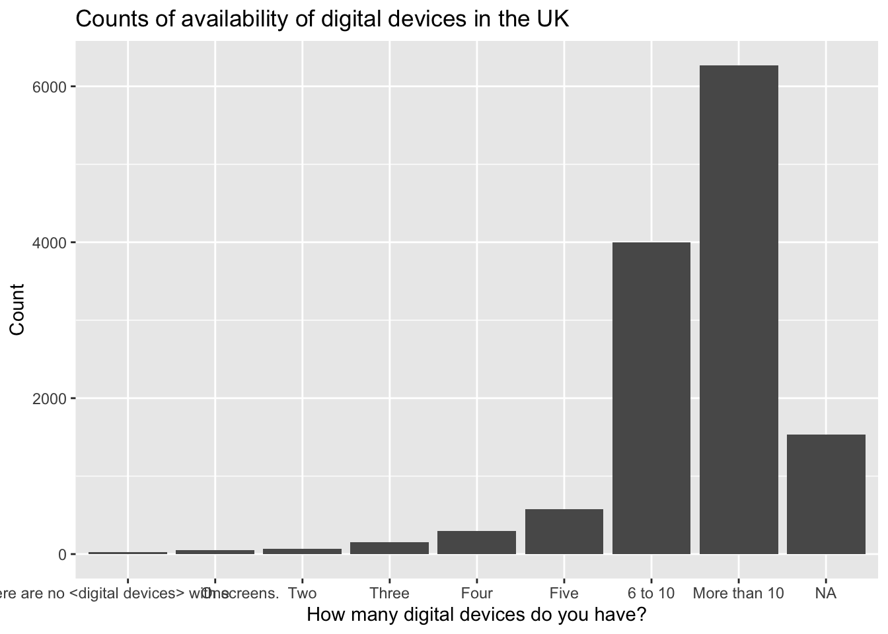
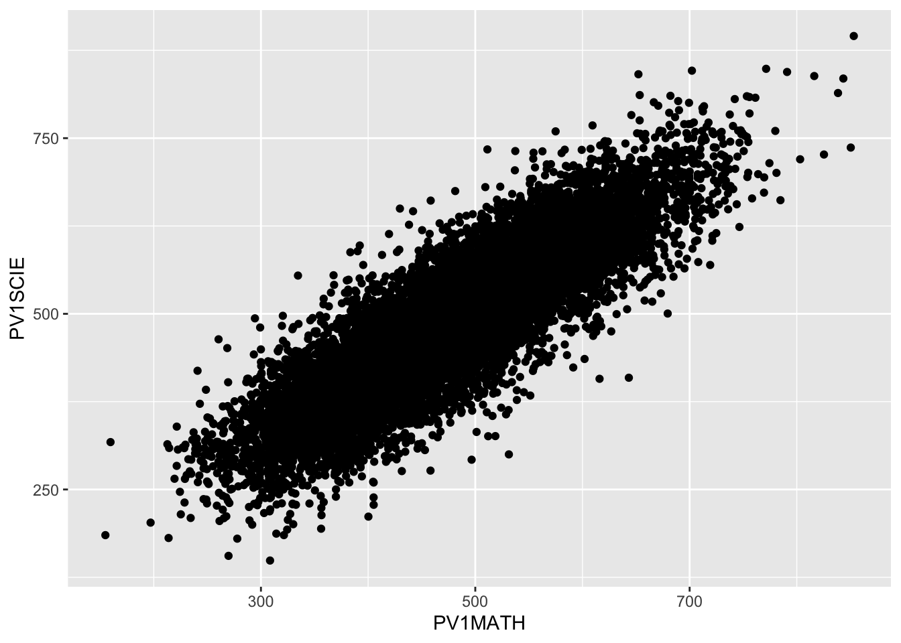

03 Descriptive Statistics
1 Pre-reading and pre-seminar task
Before the session, please read: Davis (2013) Link to chapter
Getting set up
Ensure you have the PISA 2022 data frame loaded. If you can see the PISA_2022 data frame in your environment window (at the top right of your screen), there is no need to reload.
2 Descriptive statistics
2.1 Using the command line for descriptive statistics
For further reading on descriptive statistics see chapter 5 of Navaro’s Learning Statistics with R.
We are going to focus on the following variables in the PISA_2018 data frame:
CNT the country of the student.
ISCEDO refers to the type of school the student attends. It’s values can be: General, Pre-Vocational, Vocational, Modular, or NA.
HOMEPOS is a self-reported measure of student’s wealth linked to students’ possessions. It is a numeric variable, with a mean of -0.447, minimum of -10.07 and a maximum of 15.24.
ESCS is the index of economic, social and cultural status. It might be thought of a relating to a measure of economic and social status (with some cultural capital measures included). It is a numeric variable, with a mean of -0.310, minimum of -6.84 and a maximum of 7.38.
PV1MATH, PV1SCIE, PV1READ are the plausible value scores for achievement tests in mathematics, science and reading, respectively. The full achievement tests are long, so each student only completes a subset of items (which still takes 2 hours). Statistical models are then used to calculate an overall score, based on the response to the subset, as if students had answered all the questions. Ten different approaches to calculating a representative scores, plausible values are used, leading to ten different plausible values. We will just use the first plausible value (PV1). This differs from the PISA recommendation for using the scores, but simplifies things for teaching. For more on plausible values see: What are plausible values?
ST004D01T is the gender variable and is either ‘Male’, ‘Female’ or NA.
The simplest way to find information about a data frame is to use the console. You type commands to find out about a data frame directly into the console. To preform an action on a particular column (also called a vector), we use the $ symbol. For example, to refer to country data (which is in the vector CNT) we would use PISA_2022$CNT
In the command line, if you want to find the mean of all the science scores you can type the following:
mean(PISA_2022$PV1SCIE)
Notice that you get this response: [1] NA. An NA in the data frame can occur for a number of reasons, for example it may indicate a response is missing or incomplete. To tell R to ignore such entries, we add na_rm = TRUE to a function:
mean(PISA_2022$PV1SCIE, na_rm = TRUE)
You can use the command line with a number of functions to find useful information about a data frame. R has a number of standard functions that might be useful for descriptive statistics. To find out details about data frames, you can use:
-
nrow()finds the number of rows (e.g.nrow(PISA_2022)) -
ncol()finds the number of columns (e.g.ncol(PISA_2022)) -
names()finds the names of all the columns (e.g.names(PISA_2022))
If you are working on individual columns, e.g. max(PISA_2022$PV1SCIE), you can use:
-
mean()- finds the arithmetic mean -
median()- finds the median value -
min()- finds the minimum value -
max()- finds the maximum value -
sd()- finds the standard deviation -
range()finds the range of values -
length()finds the number of items -
unique()finds the unique items
Maybe surprisingly, there is no function to calculate the mode in the tidyverse package. However, you can get one by loading the modeest package and using the most frequent value (mfv) function.
# Install the modeest package to calculate a mode
library(modeest)
library(tidyverse)
# The mode can be found with the most frequent value (mfv) function
# We can create a data frame for UK mathematics scores
PISAUKMath<-PISA_2022%>%
select(CNT, PV1MATH)
# Then use mfv to find the mode value (note the na.rm=TRUE to avoid NAs)
mfv(PISA_2022$PV1MATH, na_rm= TRUE)[1] 386.086You can read a complete list of what the items in PISA mean here: PISA 2022 student survey item descriptors
A useful way to get a quick summary of what is in a data.frame is, the summary command. This command outputs the minimum, median, mean, maximum (and 1st and 3rd quartile, i.e. the values at 25% and 75% of the range). For example, to get a sense of the science score variable (PV1SCIE) we can use:
The NAs refer to the number of NAs in the variable. An NA can occur for a number of reasons, including where a student, teacher or school has failed to complete a question.
3 Filtering Data frames
We will now learn how to calculate means of subgroups of schools using the filter and summarise functions. We can use filter to focus on only a subset of our data.frame. For example, below, we choose to focus on responses from UK students.
In line 3 below, we focus on UK responses. Note that, in filter we use ==. Then we use summarise to calculate the means of the variables we are interested in, students getting science (PV1SCIE), mathematics (PV1MATH) and reading scores. We can also find the total number of students entered in the UK, using n(), which counts the number of rows.
# Selecting only UK responses and finding the mean of various variables
PISA_2022 %>%
filter(CNT == "United Kingdom") %>% # Filter to only include UK entries (note the ==)
summarise(MeanSci = mean(PV1SCIE),
MeanMath = mean(PV1MATH),
Total = n())# A tibble: 1 × 3
MeanSci MeanMath Total
<dbl> <dbl> <int>
1 492. 483. 12972If you want to filter by a different vector (that is, a different column in the table), don’t forget to change the name of the vector in the filter command, for example, to find the mean mathematics and reading scores, and total number of pupils who are girls (using the gender variable ST004D01T which gives the type of schools.
Don’t forget to use the %>% and the == in filter!
PISA_2022 %>%
filter(ST004D01T == "Female")%>%
summarise(MeanSci= mean(PV1SCIE, na_rm=TRUE),
MeanMath = mean(PV1MATH, na_rm=TRUE),
Total=n())# A tibble: 1 × 3
MeanSci MeanMath Total
<dbl> <dbl> <int>
1 452. 438. 305759You can add multiple filters by using the & operator which means AND. Later on we will also meet | (the vertical line symbol), which means OR. So if you want to find the scores of female students in the UK you would use:
Often we are interested in summary data across multiple subgroups. We can then tell R to group_by, for example, group_by(CNT), to get a summary of data for subgroups.
# Grouping by country and summarising
PISA_2022 %>%
group_by(CNT)%>%
summarise(MeanSci = mean(PV1SCIE),
MeanMath = mean(PV1MATH),
Total = n())# A tibble: 80 × 4
CNT MeanSci MeanMath Total
<fct> <dbl> <dbl> <int>
1 Albania 376. 368. 6129
2 United Arab Emirates 436. 434. 24600
3 Argentina 415. 389. 12111
4 Australia 508. 487. 13437
5 Austria 494. 491. 6151
6 Belgium 495. 494. 8286
7 Bulgaria 422. 418. 6107
8 Brazil 406. 380. 10798
9 Brunei Darussalam 445. 440. 5576
10 Canada 499. 484. 23073
# ℹ 70 more rowsIn the console, R will truncate tables, so you might only see the first 10 countries of 80 in the data frame using the code above. One solution to this is to put the results of the summarising into a new data frame (e.g. summarydata) which you can then view from the environment window (and use for future processing). To do this you use the asign operator <-.
4 Creating summary tables and manipulating them
The PISA data frame is large (!) so it can often be helpful to create interim summary tables.
When using summarise, be careful to add a comma after each function, and check you have closed as many brackets as you open!
A useful function is table which creates a summary table of the counts of unique entries in a data frame. For example, we might want to know how many schools of different types (General, Pre-Vocational, Vocational, Modular) there are in the PISA data frame for the UK.
We have met the filter function which splits a table into subsets by rows. In the example below, we will use select which creates a subset of a table by columns. For example, if I want to create the table of school type by country, we need only include two columns from the PISA_2018 data frame: country (CNT) and school type (ISCEDO). We use the command select to focus on those two: select(CNT, ISCEDO).
To create a summary table, intuitively, we use the table function. There are two additional actions we need to do. First, because we piped the whole PISA_2022 data frame, if we apply table, then even though we have filtered by the UK, the data frame retains levels for all the other countries. If we don’t remove these levels, we will get a large data frame with many zero entries for the countries we have filtered out. The function droplevels() removes the levels for other countries (i.e. everything other than the United Kingdom). Finally, the output of table is a datatype called (appropriately) a table. Data frames are more easily manipulated so we convert the table into a data frame using as.data.frame(table(SchoolType)).
# Creating a summary data frame
GenderUK <- PISA_2022 %>% # Create a new data frame, SchoolType,
# and pipe PISA_2022 into it
filter(CNT == "United Kingdom") %>% # Filter by the UK
select(CNT, ST004D01T) %>% # Choose the columns of interest
droplevels() # Ignore countries we are not interested in
GenderUKSummary <- as.data.frame(table(GenderUK ))
GenderUKSummary CNT ST004D01T Freq
1 United Kingdom Female 6397
2 United Kingdom Male 6575You can open the GenderUKSummary data frame and see the summary data. Table has created a new column Freq which stores the results of the counts.
It might now be interesting to know what percentage the counts of school types represent. To achieve that, first we create a variable that is the total number of schools (to calculate the percentage). This variable is total, and we perform a simple sum on the count column - GenderUKSummary$Freq.
We then use the mutate function. mutate allows you to add a new column to a table. You pipe the data frame to mutate, and begin by giving the name of the new column you want, in this case the percentage of schools of each type, we will call this PerSch mutate(PerSch=. Then we set the value of that column to the percentage calculation: 100*(Freq/total). The Frequency count for each column will be multiplied by 100 and divided by the total.
# Adding a percentage column
total <- sum(GenderUKSummary$Freq) # Calcuate the total of all the Freq # columns
GenderUKSummary %>%
mutate(PerSch = 100*(Freq / total)) # Use mutate to create a new column CNT ST004D01T Freq PerSch
1 United Kingdom Female 6397 49.31391
2 United Kingdom Male 6575 50.68609 CNT ST004D01T Freq
1 United Kingdom Female 6397
2 United Kingdom Male 6575We can also get the same result by using the sum function inside mutate. Here PerSch is calculated for each row, taking the Freq value for that row and dividing it by the sum of Freq for all rows, i.e. calculating the percentage:
You can use the round function to display a given number of decimal places. Here, I have used round( ,2) to limit the percentage calculation to two significant figures.
5 Graphing
For more details on graphing with the PISA_2018 data frame, see ?@sec-graphing
5.1 Bar graphs
Imagine we want to plot a graph of how many digital devices with screens students report in their home ST253Q01JA in the UK.
When plotting graphs, it makes things easier to have a data.frame of the data you will pass to ggplot - a bit like the final table of data you will actually plot when drawing a graph in real life.
To produce the graph, we wiill first create a new data.frame we will use in the plot. I have called that data.frame Digitplot. To do this, take the PISA_2022 data.frame, pipe it, and select ST253Q01JA and CNT and filter for the UK.
You have seen piping before. The new element here is using ggplot, one of R’s graphing functions (you can find more details on how to use geom_bar to plot bar graphs, in the section: Geom_bar).
To plot a graph, you call ggplot and specify the data you want to use for the graph (in our case, the new data.frame we have created, DDplot).
The next layer of ggplot is the aesthetics (aes), i.e., what our graph will look like. First, we tell ggplot what data we want our y axis to represent, in this case the number of students with interactive whiteboards in the item ST253Q01JA . Finally, we specify we want a bar graph using geom_bar().
# Graphing the numbers of digital devices students have
DDplot <- PISA_2022%>%
select(CNT, ST253Q01JA)%>%
filter(CNT == "United Kingdom")
# use DDplot data to create a graph
ggplot(data=DDplot,
aes(x=ST253Q01JA)) +
geom_bar()
You can modify the graph by adding axis labels and titles using xlab("label"), ylab("label"), and ggtitle("title").
# use IWBplot data to create a graph
# Adding axis labels and a title
ggplot(data = DDplot,
aes(x = ST253Q01JA)) +
geom_bar()+
xlab("How many digital devices do you have?")+
ylab("Count")+
ggtitle("Counts of availability of digital devices in the UK")
You can add colour, by specifying that the fill of the bars should be by the value of IC009Q11NA in the aesthetics: aes(x=IC009Q11NA, fill=IC009Q11NA).
# use IWBplot data to create a graph
# Adding axis labels and a title
# And adding colour
ggplot(data = DDplot,
aes(x = ST253Q01JA, fill = ST253Q01JA)) +
geom_bar()+
xlab("How many digital devices do you have?")+
ylab("Count")+
ggtitle("Counts of availability of digital devices in the UK")
To rotate the text on the x-axis you can add the text: +theme(axis.text.x = element_text(angle = 90, vjust = 0.5, hjust=1)). Inserting \n into the title adds a line break to divide the long title. We can turn the legend off with + theme(legend.position = "none")
# use DDplot data to create a graph
# Adding axis labels and a title
# And adding colour
ggplot(data = DDplot,
aes(x = ST253Q01JA, fill = ST253Q01JA)) +
geom_bar()+
xlab("How many digital devices do you have?")+
ylab("Count")+
ggtitle("Counts of availability \n of digital devices in the UK")+
theme(axis.text.x = element_text(angle = 90, vjust = 0.5, hjust=1))+
theme(legend.position = "none")
You make wish to plot multiple series, for example, the interactive whiteboard data reported by boys and girls. In that case, we need to include the gender vector ST004D01T in the data frame to plot DDplot. To highlight the difference between boys and girls, in the aesthetics we set the fill colour by the gender variable: fill=ST004D01T. Finally, we need to tell ggplot to plot the bars side-by-side, rather than stacking them - you do this by specifying position = position_dodge2().
# Graphing the number of digital devices students have by gender
DDplot <- PISA_2022 %>%
select(CNT, ST253Q01JA, ST004D01T) %>%
filter(CNT == "United Kingdom")
# Plotting two series - in this case, by gender
ggplot(data = DDplot,
aes(x = ST253Q01JA, fill = ST004D01T)) +
geom_bar(position = position_dodge2())+
xlab("How many digital devices do you have?")+
ylab("Count")+
ggtitle("Counts of availability \n of digital devices in the UK")+
theme(axis.text.x = element_text(angle = 90, vjust = 0.5, hjust=1))
If you take `position = position_dodge2() out, ggplot will default to stacking the bars.
# Graphing the number of digital devices students have
DDplot <- PISA_2022 %>%
select(CNT, ST253Q01JA, ST004D01T) %>%
filter(CNT == "United Kingdom")
# Plotting two series - in this case, by gender
ggplot(data=DDplot,
aes(x = ST253Q01JA, fill = ST004D01T)) +
geom_bar()+
xlab("How many digital devices do you have")+
ylab("Count")+
ggtitle("Counts of availability of digital devices in the UK")
You can add text, for example the counts, to the graphs, using geom_text. We set the label to ..count.. and stat=count. Because the bars have been positioned using position_dodge, you need to do the same for the labels. vjust=-0.5 sets the height of the label over the bar.
# Graphing the number of students who have an interactive whiteboard by gender
DDplot <- PISA_2022 %>%
select(CNT, ST253Q01JA, ST004D01T) %>%
filter(CNT == "United Kingdom")
# Plotting two series - in this case, by gender with text
ggplot(data = DDplot,
aes(x = ST253Q01JA, fill = ST004D01T)) +
geom_bar(position = position_dodge2())+
xlab("How many digital devices do you have?")+
ylab("Count")+
ggtitle("Counts of availability of digital devices in the UK")+
geom_text(aes(label=..count..), stat = "count",
position = position_dodge2(width = 0.9), vjust = -0.5)
5.2 Scatter graphs
To plot a scatter graph we use geom_point (see also: Geom_Point section), which works in a similar way to geom_bar.
Example
Imagine we want to plot a graph of mathematics scores PV1MATH (on the x-axis) against science scores PV1SCIE (y-axis) for students in the UK.
A above, we first want to create a data.frame to plot - in this case we have called it plotdata. We select only the columns we need (PV1MATH, PV1SCIE, and CNT to filter for the UK), and then filter for the UK.
We use the ggplot function, specifying data = plotdata (i.e. we want to plot the data in the specified data frame). As with geom_bar, we can use ggplot and first specify the data we want to plot (ggplot(data = plotdata,). Next, we set the aesthetic variables (aes) - to keep things simple, we will set only the x and y variables. Then we call geom_point to plot the points as a scatter graph.
# Filter to create a data frame of UK scores in science and mathematics
plotdata<-PISA_2022 %>%
select(CNT, PV1SCIE, PV1MATH)%>%
filter(CNT == "United Kingdom")
# Plot the data as a scatter graph with geom_point()
ggplot(data = plotdata,
aes(x = PV1MATH, y = PV1SCIE)) +
geom_point()
We can make things more pleasing by adding more features. For example, we can add colour (geom_point(colour = "blue")) and rename the axes labs(x = "Mathematics score", y = "Science score"). Note when adding to ggplot, the + should come at the end of the line before the new addition to avoid an error.
# Filter to create a data frame of UK scores in science and mathematics
plotdata<-PISA_2022 %>%
select(CNT, PV1SCIE, PV1MATH)%>%
filter(CNT == "United Kingdom")
# Plot the data as a scatter graph with geom_point()
ggplot(data = plotdata,
aes(x = PV1MATH, y = PV1SCIE)) +
geom_point(colour = "blue")+
labs(x = "Mathematics Score", y = "Science Score")
We can also add a line using (geom_smooth(method='lm')) - here lm specifies a linear plot (i.e. a straight line).
# Filter to create a data frame of UK scores in science and mathematics
plotdata<-PISA_2022 %>%
select(CNT, PV1SCIE, PV1MATH)%>%
filter(CNT == "United Kingdom")
# Plot the data as a scatter graph with geom_point()
ggplot(data = plotdata,
aes(x = PV1MATH, y = PV1SCIE))+
geom_point(colour = "blue")+
labs(x = "Mathematics Score", y = "Science Score")+
(geom_smooth(method = 'lm'))
We can also change the colour of the points by a variable in the data frame - for example by gender (aes(colour=ST004D01T) - NB In order to change colour by gender, the gender variable (ST0040D01T) must be included in the data set to plot. We can vary the size of points and make them slightly transparent (their alpha level): geom_point(alpha=0.4, size=0.6), and move the legend to the bottom (theme(legend.position = "bottom"))
# Create a data set of UK maths and science scores including gender
plotdata<-PISA_2022 %>%
select(CNT, PV1SCIE, PV1MATH, ST004D01T)%>%
filter(CNT == "United Kingdom")
# Plot the data as a scatter graph with geom_point()
ggplot(data = plotdata,
aes(x = PV1MATH, y=PV1SCIE, colour = ST004D01T)) +
geom_point(alpha = 0.4, size = 0.6)+
labs(x="Mathematics Score", y="Science Score")+
(geom_smooth(method = 'lm'))+
theme(legend.position = "bottom")+
theme(legend.title = element_blank()) # Removes the legend title (try running with this line removed)
For a summary of all the elements of a graph you can change in ggplot - see this help sheet.
6 Seminar activities
6.1 Task 1 - discussion
Thee discussion activity is based on the set reading Davis (2013) Link to chapter

Consider how and why we think of things as being ‘normal’ (or not). Some suggested questions for group discussion are:
- What were your immediate thoughts on reading this paper?
- In what ways have you yourself been aware of being compared against norms, averages or ideals in the past? How do/did you feel about that?
- As an education professional, have you compared individual students against any expected norms, averages, or ideals? And have you compared groups of students against each other?
- When and how was this useful - what was gained?
- When and how was this problematic - what issues arose?
- Thinking about the points made in the reading, consider how different students may be advantaged or disadvantaged through the use of such comparisons in education settings.
Note that the PISA data collection protocol allows countries to exclude up to 5% of the relevant population (see the PISA 2018 technical report - (oecd2018?), Annex A2), in particular allowing the exclusion from the data of either individual students by their disability status, or whole schools which provide specialist education (e.g. for blind students). Permitted exclusions include: “intellectual disability, i.e. a mental or emotional disability resulting in the student being so cognitively delayed that he/she could not perform in the PISA testing environment”, and “functional disability, i.e. a moderate to severe permanent physical disability resulting in the student being unable to perform in the PISA testing environment” along with other exclusions.
- What impact might these exclusions have on the analyses produced?
- The exclusion and under-representation of disabled students has been challenged in the European Parliament. What do you think about this?
6.2 Task 2 - Using the command line
- Using the command line, find out:
- The number of students (i.e. the number of rows) in the PISA 2022 data frame
- The number of items in our data frame (i.e. the number of columns)
- The mean, maximum and minimum science score (don’t forget to use
$) - The unique values of
ST003D02T- what information do you think this column holds?
Answer
# Using the command line
# a) Find the number of students (i.e. the number of rows) in the PISA 2018 data frame
nrow(PISA_2022)
# b) The number of items in our data frame (i.e. the number of columns)
ncol(PISA_2022)
# c) The mean, maximum and minimum science score (don't forget to use $)
mean(PISA_2022$PV1SCIE)
max(PISA_2022$PV1SCIE)
min(PISA_2022$PV1SCIE)
# d) The unique values of ST003D02T - what information do you think this column holds?
unique(PISA_2022$ST003D02T)
# This column contains students' birth months
# You can find out the subtitle of columns using
attributes(PISA_2022$ST003D02T)
6.3 Task 3 - Using the summary function
- Using
summaryfind:
- The maximum and minimum of the HOMEPOS (Wealth) variable
- The mean reading score
- The minimum science score in the data set
- Consider the distributions of the reading and science scores, and comment on any differences.
6.4 Task 4 - Creating summary tables
Make sure you have spelled the name of the variables PV1MATH, etc. correctly. They are case sensitive. You can use the function colnames(PISA_2022) to get a list of names and copy and paste them.
Find the total number of students who responded in the United States, and their mean science, mathematics and reading scores. Compare that to the responses from China (Note the country name for China is: B-S-J-Z (China), indicating the data are drawn from the four participating municipalities, Beijing, Shanghai, Jiangsu and Zhejiang). Don’t forget to pipe (
%>%) each step!Filter the data frame for the UK and
group_bygender (which isST004D01T). Use summarise to find the maximum, minimum and mean scores for boys and girls in mathematics.Filter the data frame for the UK, the US and China, and
group_bygender (which isST004D01T) and country. Use summarise to compare mathematics and science achievement.
Answer
# Summarising responses in the US and China and finding means
PISA_2022 %>%
filter(CNT == "United Kingdom" | CNT == "B-S-J-Z (China)")%>%
group_by(CNT)%>%
summarise(MeanSci = mean(PV1SCIE),
MeanMath = mean(PV1MATH),
MeanRead = mean(PV1READ),
Total = n())
# Comparing male and female mathematics performance in the UK
PISA_2022 %>%
filter(CNT == "United Kingdom")%>%
group_by(ST004D01T)%>%
summarise(MeanUKMath = mean(PV1MATH),
MaxUKMath = max(PV1MATH),
MinUKMath = min(PV1MATH))
# Comparing male and female mathematics performance in the UK, US and China
PISA_2022 %>%
filter(CNT == "United Kingdom" | CNT== "United States" |
CNT== "B-S-J-Z (China)")%>%
group_by(ST004D01T, CNT)%>%
summarise(MeanMath = mean(PV1MATH),
MaxMath = max(PV1MATH),
MinMath = min(PV1MATH))Don’t forget to use the pipe operator %>% between each function!
WB171Q01HA asks participants to think of the last time you had a break between classes at school: How did you feel: Happy. For students in France, find out the percentage of students who responded with the different options: Not at all A little Quite a bit Extremely Valid Skip Not Applicable Invalid No Response Missing. (Hint: don’t forget to droplevels()).
Answer
# Finding the percentage of students who feel happy between lessons in France
WellData<-PISA_2022%>%
select(CNT, WB171Q01HA)%>%
filter(CNT == "France")%>%
group_by(WB171Q01HA)%>%
droplevels()
WellData<-as.data.frame(table(WellData))
Total = sum(WellData$Freq)
WellData<-WellData%>%
mutate(WellData=round((Freq*100 / Total),1))
WellDataST251Q06JA asks students if they have a musical instrument in their home. What percentage of students in the UK have no instruments in their home? What is the percentage in China?
Answer
# Finding the percentage of students with no musical instruments in the UK and China
# Select the relevant variables, filter for the countries and group - dropping levels to cut unnecessary countries
MusicData<-PISA_2022%>%
select(CNT, ST251Q06JA)%>%
filter(CNT == "United Kingdom"|CNT == "B-S-J-Z (China)")%>%
group_by(ST251Q06JA, CNT)%>%
droplevels()
# Convert to a data frame
MusicData<-as.data.frame(table(MusicData))
# Find the total number of students to calculate percentages
Total = sum(MusicData$Freq)
# Mutate to add a column with the percentage calculation
MusicData<-MusicData%>%
mutate(PercComp = round((Freq*100 / Total), 1))
MusicDataDon’t forget to use the pipe operator %>% between each function!
6.5 Task 5 - Bar graphs
-
ST038Q08NAasks students in the past 12 months, how often do other students spread nasty rumours about them
Answer
# Select country and question data and Filter for the UK and France
Rumplot <- PISA_2022 %>%
select(CNT, ST038Q08NA) %>%
filter(CNT == "United Kingdom"|CNT == "France")
# use rumour data to create a graph
# Set x as the item on culture and fill by the country
# Remember to use position dodge to plot the bars side by side
ggplot(data = Rumplot,
aes(x = ST038Q08NA, fill = CNT)) +
geom_bar(position = "dodge2")+
xlab("Do students spread rumours about you?")+
ylab("Count")+
ggtitle("Spreading rumours: France vs. the UK")+
theme(axis.text.x = element_text(angle = 90, vjust = 0.5, hjust=1))
# Rotate axis text-
PA195Q01JAasks students how many books are in their home. Plot a bar graph for students in Germany. Then plot a graph splitting the data by gender (ST004D01T).
Answer
# Create a data set related to books in Germany and include gender
Bookplot <- PISA_2022 %>%
select(CNT, PA195Q01JA, ST004D01T) %>%
filter(CNT == "Germany")
# use book data to create a graph
ggplot(data = Bookplot,
aes(x = PA195Q01JA, fill=PA195Q01JA)) +
geom_bar(position = "dodge2") +
theme(axis.text.x = element_text(angle = 90, vjust = 0.5, hjust = 1))+
# To rotate the x-axis text
xlab("Number of books in the home")+
ylab("Count")+
ggtitle("Number of books in the home for German students by gender")
# use fill by gender to split the data
ggplot(data = Bookplot,
aes(x = PA195Q01JA, fill = ST004D01T)) +
geom_bar(position = "dodge2") +
theme(axis.text.x = element_text(angle = 90, vjust = 0.5, hjust = 1))+
# To rotate the x-axis text
xlab("Number of books in the home")+
ylab("Count")+
ggtitle("Number of books in the home for German students by gender")- Plot a bar graph of the mean mathematics scores of all the countries in the PISA data frame
- Hint one: you will need to create a summary dataframe using
group_byandsummariseand thengeom_bar(stat="identity"). You usestat=identitywhen you wantgeom_barto plot the values in thedata.frame(because you have already summarised) rather than counting the values. - Hint two: you can reorder the x-axis with the
reorderfunction. Rather than a simplex=CNTyou can putx=reorder(CNT, -SciMean)which will reorder the x axis in descending order (because of the-sign) ofSciMean.
Answer
# Create a data set of science scores, and use group_by and summarise to create mean scores by country
Sciplot <- PISA_2022 %>%
select(CNT, PV1SCIE) %>%
group_by(CNT)%>%
summarise(MeanSci = mean(PV1SCIE))
# Use geom_bar to plot the data
ggplot(data = Sciplot,
aes(x = reorder(CNT, -MeanSci), y = MeanSci, fill = MeanSci)) +
geom_bar(stat = "identity") +
theme(axis.text.x = element_text(angle = 90, vjust = 0.5, hjust = 1))6.6 Task 6 - Scatter graphs
- For students in the UK and Brazil, plot science scores (
PV1SCIE) by the index of economic, social and cultural status (ESCS). (You may have come across this variable in your studies as socioeconomic status, similar to the idea of ‘social class’.) Then try varying the colour of points by country, and add a line for each.
Answer
plotdata<-PISA_2022 %>%
select(CNT, PV1SCIE, ESCS)%>%
filter(CNT == "United Kingdom"|CNT == "Brazil")
# Plot the data as a scatter graph with geom_point()
ggplot(data=plotdata,
aes(x = ESCS,y = PV1SCIE, colour = CNT)) +
geom_point(alpha = 0.2, size = 0.6)+
labs(x = "Index of economic, social and cultural status",
y = "Science Score")+
(geom_smooth(method = 'lm'))+
theme(legend.position = "bottom")+
labs(CNT = "Country") # Changes ST004D01T to gender for the plot- For students in the UK, plot a graph of science scores (
PV1SCIE) against reading scores (PV1READ). Add a straight line and vary the colour of points by students’ gender.
Answer
plotdata<-PISA_2022 %>%
select(CNT, PV1SCIE, PV1READ, ST004D01T) %>%
filter(CNT == "United Kingdom")
# Plot the data as a scatter graph with geom_point()
ggplot(data = plotdata,
aes(x = PV1READ, y = PV1SCIE, colour = ST004D01T)) +
geom_point(alpha = 0.6, size = 0.6) +
labs(x = "Reading Score", y = "Science Score") +
geom_smooth(method = 'lm') +
theme(legend.position = "bottom")+
labs(colour = "Gender") # Changes ST004D01T to gender for the plot- Challenging task (!): Plot a graph of mean mathematics score (
PV1MATH) by economic, social and cultural status (ESCS) and highlight countries with mathematics scores above 800. An outline of how to achieve this:
- Create a data frame of mean
PV1MATHandESCSby country usinggroup_byandsummarise. (Don’t forget to use na.RM=TRUE) - Use
mutateandifelseto add a new variable, calledtextwhich contains the names of countires with mathematics scores over 550. - Use
geom_labelto add these data points to the x and y coordinates of the countries e.g.geom_text_repeal(PV1MATHmean, ESCSmean, label).
Answer
# Create a data frame of ESCS scores and mathematics scores
plotdata<-PISA_2022%>%
select(CNT, ESCS, PV1MATH)%>%
group_by(CNT)%>% # group_by country
summarise(PV1MATHmean = mean(PV1MATH), #calculate means
ESCSmean = mean(ESCS, na.rm = TRUE))%>%
mutate(text = ifelse(PV1MATHmean > 550, as.character(CNT), ""))
# Use mutate to create a newc columns called text
# If PV1MATHmean is over 800 set text to equal CNT, otherwise set it to blank ("")
# Plot the data, putting mean math score on y and ESCS mean on the x
# Set the colour of points by the mean math score
ggplot(plotdata, aes(y=PV1MATHmean, x = ESCSmean, colour = PV1MATHmean))+
geom_point()+
geom_text_repel(aes(y = PV1MATHmean, x=ESCSmean, label = text))+
xlab("Mean ESCS score")+
ylab("Mean mathematics score")+
ggtitle("Comparison of mean mathematics and mean ESCS score")+
theme(legend.position = "none") # Hide the legend:::
7 Extension tasks
7.1 Task 1 Binning data
Frequency plots are often used to show data following a normal distribution, To produce a frequency plot, we need to divide data into counts, each covering a range of data. This is called ‘binning’. There is a choice to be made here, in how large or small to make the divisions (‘bins’) - this can affect how the data looks when graphed.
For example, to produce a frequency plot of science scores in the UK, we can first run a summary command on PV1SCIE to find the minimum and maximum score:
Min. 1st Qu. Median Mean 3rd Qu. Max.
0.0 371.7 444.5 450.5 524.7 895.4 If we wanted to plot a frequency chart of heights, we might divide the range of scores (from 0-895.4) into bins of 20 points. To do this we can use the cut(<field>,<breaks>) function within the mutate command on a ‘data.frame’. The <field> specifies the range (i.e. from around 0-900) and <breaks> the size of bins.
In the example below, we use cut(PV1SCIE, breaks=seq(0,900,20)) to create a new vector (column in the table) with the total number of pupils divided up into bins. The specification breaks=seq(0,900,20)) sets how the data are divided up - into bins (i.e. groups of respondents) of scores starting at50 and rising to 900 in steps of 20.
# Creates distribution of schools by size
binnedsize <- PISA_2022 %>% # Creates a new data frame with binned data
select(PV1SCIE, CNT)%>% # Select the columns needed
filter(CNT == "United Kingdom")%>%
mutate(BinnedPV1SCIE = cut(PV1SCIE, breaks=seq(0, 900, 20)))%>%
na.omit() # Drop any NAs
# Plot the data as a bar graph
ggplot(binnedsize,
aes(x = BinnedPV1SCIE)) +
geom_bar(fill = "dark green") +
theme(axis.text.x = element_text(angle = 90, vjust = 0.5, hjust = 1)) +
labs(y = "Number of schools", x = "Pupil range")
Create a graph of the binned counts of mathematics scores in Malta. Don’t forget to run a summary command first to get a sense of the range in values.
To find out the range of a vector, you can use the range function in the console - for example, to get a sense of the range of science scores for the whole data frame, we can type: range(PISA_2022$PV1SCIE, na_rm=TRUE). Notice that, because there are NAs in the data, we need to tell the function to ignore them, using na_rm=TRUE.
Answer
# Creates distribution of schools by size
binnedsize <- PISA_2022 %>% # Creates a new data frame with binned data
select(PV1MATH, CNT)%>% # Select the column I need
filter(CNT == "Malta")%>%
mutate(BinnedPV1MATH = cut(PV1MATH, breaks=seq(20,900,20)))%>%
na.omit() # Drop any NAs
# Plot the data as a bar graph
ggplot(binnedsize,
aes(x = BinnedPV1MATH)) +
geom_bar(fill = "orange") +
theme(axis.text.x = element_text(angle = 90, vjust = 0.5, hjust = 1)) +
labs(y = "Number of schools", x = "Pupil range")To find out a range of a vector, you can use the range function in the console - for example, to get a sense of the range of numbers of students on SEN support. I can type: range(DfE_SEN_data$SEN.support)
Plot a binned geom_bar graph of the HOMEPOS scores in the UK and Belarus on the same axes.
Answer
# Creates distribution of schools by size
binnedwealth <- PISA_2022 %>% # Creates a new data frame with binned data
select(HOMEPOS, CNT)%>% # Select the column I need
filter(CNT == "Belarus"| CNT == "United Kingdom")%>%
mutate(BinnedHOMEPOS = cut(HOMEPOS, breaks=seq(-8, 5, 0.25)))%>%
na.omit() # Drop any NAs
# Plot the data as a bar graph
ggplot(binnedwealth,
aes(x = BinnedHOMEPOS, fill = CNT)) +
geom_bar() +
theme(axis.text.x = element_text(angle = 90, vjust = 0.5, hjust = 1)) +
labs(y = "Frequency", x = "Wealth")7.2 Task 2 Plotting data on maps
As well as graphs, R can also plot data onto maps. The geom_map function will plot a map of a region and you can either plot points (using geom_point) or fill regions by drawing a polygon of the shape of that region (using geom_polygon).
For example, imagine we created a data frame of the mean science scores of countries in the PISA data:
In order to plot the data onto a map, colouring the countries by science scores, we need data which gives the coordinates of the edges of the countries. This data is available in the rworldmap package. First we load the latitude and longitude data into a new data frame world_data, then use left_join to combine it with the science data.
One quirk of the two data frames (world_data and the PISA data) is that some countries have different names. For example, PISA uses ‘United Kingdom’, but the rworldmap package uses ‘UK’. We can change the PISA data.frame to match the rworldmap.
# The names of two countries in the PISA data frame and world_data data frame don't match (UK/United Kingdom and US/United States). Change the level names in the PISA data to match the world_data
WorldSci <- WorldSci %>%
mutate(region = case_when(
region == "United Kingdom" ~ "UK",
region == "United States" ~ "USA",
region == "B-S-J-Z (China)" ~ "China",
region == "Russian Federation" ~ "Russia",
.default = region))# Add the country latitude and longitude data to the PISA scores
WorldSci <- left_join(WorldSci, world_data, by = "region")
# Use geom_map to plot the basic world map (fill is white, line colour is black)
# Use geom_polygon to plot the PISA data
# Add a colour scale
Labels<-WorldSci%>%
group_by(region)%>%
summarise(meanSci = mean(meanSci), lat = mean(lat), long = mean(long))%>%
na.omit()To plot the data, we use ggplot, with the data frame to WorldSci, and the x and y variables set to long and lat, the longitudes and latitudes. We specify that we want to keep the grouping of the data frame (i.e. by country).
First we use geom_map to plot a blank map using the data - this will be the base for the highlighted countries. In the aes we give the longitudes and latitudes, and, as we want a blank map, set the fill to white and the line colour to black.
Finally, we use geom_polygon to draw coloured shapes, with the fill changing by the value of meanSci. To make the map look nice, I have used a pre-defined colour scale.
# Use geom_map to plot the basic world map (fill is white, line colour is black)
# Use geom_polygon to plot the PISA data
# Add a colour scale
ggplot(data = WorldSci, aes(x = long, y = lat, group=group)) +
geom_map(data = world_data,
map = world_data,
aes(map_id = region),
fill = "white",
colour = "black")+
geom_polygon(aes(fill = meanSci)) +
scale_fill_viridis_c(option = "viridis")
To add labels, you can create a data.frame, with only the country names, and their longitudes and latitudes (the mean of the country longitude and latitude), to use as the labels. You can then add geom_text_repelto add the labels. The repel means the labels won’t overlap. Given the number of countries, using geom_text_repel creates a warning that some labels won’t fit.
In ggplot, by default, the aesthetics are passed from one layer to the next. In our first aes call we set a grouping (group=group). However, when we come to the labeling function geom_text_repel, the data frame Labels is not grouped. We therefore need to use new aesthetics and want to ignore the original aesthetics (aes(x=long, y=lat, group=group,label=region))) we previously set.
We do this with the command inherit.aes = FALSE (i.e. do not inherit the previous aesthetics). Then in geom_text_repel(data=Labels, inherit.aes = FALSE, aes(x=long, y=lat,label=region)) we specify the label data.frame, and in aes pass the positions of the labels (x=long, y=lat) and specify that the labels are in the region vector.
ggplot(data = WorldSci,
aes(x = long, y = lat, group = group,label = region)) +
geom_map(data = world_data,
map = world_data,
aes(map_id = region),
fill = "white",
colour = "black")+
geom_polygon(aes(fill = meanSci)) +
scale_fill_viridis_c(option = "viridis") +
geom_text_repel(data = Labels,
inherit.aes = FALSE,
aes(x = long, y = lat, label = region))
Plot mean PISA mathematics scores on a world map, labeling the countries.
Answer
# Create a data.frame of mathematics scores
WorldMath <- PISA_2022 %>%
select(CNT, PV1MATH) %>%
group_by(CNT) %>%
summarise(meanmath = mean(PV1MATH)) %>%
rename(region = CNT)
# The names of two countries in the PISA data frame and world_data data frame don't match (UK/United Kingdom and US/United States). Change the level names in the PISA data to match the world_data
WorldMath <- WorldMath %>%
mutate(region = case_when(
region == "United Kingdom" ~ "UK",
region == "United States" ~ "USA",
region == "B-S-J-Z (China)" ~ "China",
region == "Russian Federation" ~ "Russia",
.default = region))
# Create a data frame of country latitude and longitude data
world_data <- map_data(map = "world")
WorldMath <- left_join(WorldMath, world_data, by = "region")
# Use geom_map to plot the basic world map (fill is white, line colour is black)
# Use geom_polygon to plot the PISA data
# Add a colour scale
Labels<-WorldMath%>%
group_by(region)%>%
summarise(meanmath = mean(meanmath), lat = mean(lat), long = mean(long))%>%
na.omit()
# Use geom_map to plot the basic world map (fill is white, line colour is black)
# Use geom_polygon to plot the PISA data
# Add a colour scale
ggplot(data = WorldMath,
aes(x = long, y = lat, group = group,label = region)) +
geom_map(data = world_data,
map = world_data,
aes(map_id = region),
fill = "white",
colour = "black")+
geom_polygon(aes(fill = meanmath)) +
scale_fill_viridis_c(option = "viridis") +
geom_text_repel(data = Labels,
inherit.aes = FALSE,
aes(x = long, y = lat, label = region))7.3 Task 3 Violin plots
Violin plots are a useful way of showing the distribution of scores across different items. They can make distributions easy to compare, at a glance, and to give a sense of the relative frequency of different scores. In ggplot you can use geom_violin to produce plots. For example, you can compare the distribution of science scores in the UK and China by gender (note the relatively long tail at the bottom of UK male science scores):
# Create a data frame of UK and China science scores including gender
PISAsubset<-PISA_2022%>%
select(CNT, PV1SCIE, ST004D01T)%>%
filter(CNT == "United Kingdom" | CNT == "B-S-J-Z (China)")
# Set up the country on the x axis, and score on the y, setting colour by gender
ggplot(PISAsubset, aes(x=CNT, y=PV1SCIE, fill=ST004D01T))+
geom_violin()+
xlab("Country")+
ylab("Science Score")You can rotate the plot using +coord_flip() and add black dots for the mean using: stat_summary(fun = "mean", geom = "point", color = "black"). You can also try geom= "crossbar". Because we have two groups (male and female), we need to add position = position_dodge(width=0.9) to make the dots appear in the right place
# Create a data frame of country science scores including gender
PISAsubset<-PISA_2022%>%
select(CNT, PV1SCIE, ST004D01T)%>%
filter(CNT == "United Kingdom" | CNT == "B-S-J-Z (China)" |
CNT == "Qatar" | CNT == "Brazil" | CNT == "Kazakhstan" |
CNT == "Korea" | CNT == "Panama")
# Set up the country on the x axis, and score on the y, setting colour by gender, flip the axes and add points for the mean
ggplot(PISAsubset, aes(x = CNT, y = PV1SCIE, fill = ST004D01T))+
geom_violin()+
xlab("Country")+
ylab("Science Score")+
coord_flip()+
stat_summary(fun = "mean", geom = "point", color = "black",
position = position_dodge(width=0.9))
Plot violin plots of PISA HOMEPOS scores, by gender, for the UK, US, China and Finland.
Answer
# Create a data frame of WEALTH scores for the 4 countries including gender
PISAsubset<-PISA_2022%>%
select(CNT, HOMEPOS, ST004D01T)%>%
filter(CNT == "United Kingdom" | CNT == "B-S-J-Z (China)" |
CNT == "Finland" | CNT == "United States")
# Set up the country on the x axis, and score on the y, setting colour by gender
ggplot(PISAsubset, aes(x=CNT, y=HOMEPOS, fill=ST004D01T))+
geom_violin()+
xlab("Country")+
ylab("PISA Wealth measure")8 Useful resources
- The ‘From Data to Viz’ blog has a helpful flowchart for choosing an appropriate type of graph for different forms of data. The’Visual Vocabulary’ site, produced by the Financial times is an alternative option for selecting an appropriate chart.
- You can find a gallery of around 400 types of visualisation you can produce in R at the R chart gallery.
- The Royal Statistical Society has produced a guide to making visual representations, Best Practice for Data Representations, that shows you how to make readable, accessible data visualisations.
- The classic text on representing data visually is Edward R. Tufte’s The Visual Display of Quantitative Information (Tufte 2001). The Visual Display is a beautiful book with illustrations of best practice in graphing and other forms of data representation. Tufte sets out the following principles - a representation should:
• show the data
• induce the viewer to think about the substance rather than about methodology, graphic design, the technology of graphic production, or something else
• avoid distorting what the data have to say
• present many numbers in a small space
• make large data sets coherent
• encourage the eye to compare different pieces of data
• reveal the data at several levels of detail, from a broad overview to the fine structure
• serve a reasonably clear purpose: description, exploration, tabulation, or decoration
• be closely integrated with the statistical and verbal descriptions of a data set. (Tufte 2001, 2:13)
Lukasz Piwek has created guidance on creating Tufte-style representations using R packages.
Further useful guidance on graphing can be found at the Friends Don’t Let Friends Make Bad Graphs pages. For example, note the advice that: ‘Friends Don’t Let Friends Make Pie Chart’ - the eye is not very good at interpreting the angles on sections of pie charts - differences between sectors of similar sizes can be hard to judge, so their use has been criticized. A stacked bar chart is a better option.
Researchers have recently suggested journals avoid bar graphs - bar charts mask the distribution of points and can misrepresent the data (Weissgerber et al. (2015)). Box plots or, if samples are large enough, violin plots are recommended.